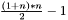
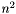

#include <stStructUtils.h>
Public Member Functions | |
| stDistanceCache (int n) | |
| virtual | ~stDistanceCache () |
| stDistance | GetDistance (int i, int j) |
| void | SetDistance (int i, int j, stDistance d) |
This class implements a sparse matrix, storing only the left side of the matrix. Because of that, it will allocate only  positions rather than  positions required by a standard matrix.
Marcos Rodrigues Vieira (mrvieira@icmc.usp.br)
Definition at line 91 of file stStructUtils.h.
|
|
Creates a new distance cache.
|
|
|
Disposes this instance and releases all associated resources. Definition at line 103 of file stStructUtils.h. |
|
||||||||||||
|
Returns the distance between object i and j.
Definition at line 114 of file stStructUtils.h. References stDistance. |
|
||||||||||||||||
|
Sets the distance between objects i and j. It is possible to set all positions of the matrix. However, due to optimization issues, it is not required to set the distances when:
Definition at line 137 of file stStructUtils.h. References stDistance. |